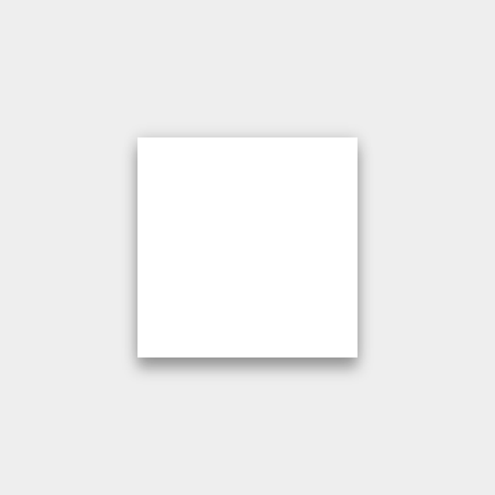

Light and shadow
Within the material environment, virtual lights illuminate the scene and allow objects to cast shadows. A key light creates directional shadows, while an ambient light creates consistent, soft shadows from all angles.
All shadows in the material environment are cast by these two light sources. Shadows are the absence of light resulting from the occlusion of these light sources by sheets of material at various positions along the z-axis.
Shadow cast by key light

Shadow cast by ambient light

Combined shadow from key and ambient lights